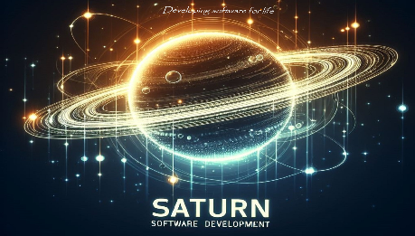

Eduin Alexander Anaya Gómez



Mi Portafolio de Proyectos y Servicios
Soy estudiante de Tecnología en Análisis y Desarrollo de Software en el SENA, con una sólida base en lenguajes de programacaión y tecnologías de desarrollo web. Ademas, he completado mi formación con cursos adicionales en diseño gráfico y programción avanzada, lo que me permite abordar proyectos de manera integral, desde la concepción del diseño hasta su implementación técnica.
Mi objetivo es seguir desarrollando mis habilidades técnicas y colaborara en proyectos desafiantes que me permitan crecer tanto profesional como personalmente.


Se esta desarrollando un sistema (POS) para tiendas de barrio y pequeños comercios en los
municipios donde se dificulta el acceso a grandes servicios por los altos costos.

Se empezó con un diseño de juego interactivo de rol de programador en el espacio exterior
para enseñar a los participantes inicialmente lenguajes de programación como JavaScript y
HTML, desarrollando su conocimiento y practicando con diferentes situaciones donde
deben programar o corregir algunas líneas de código para superar los diferentes niveles.